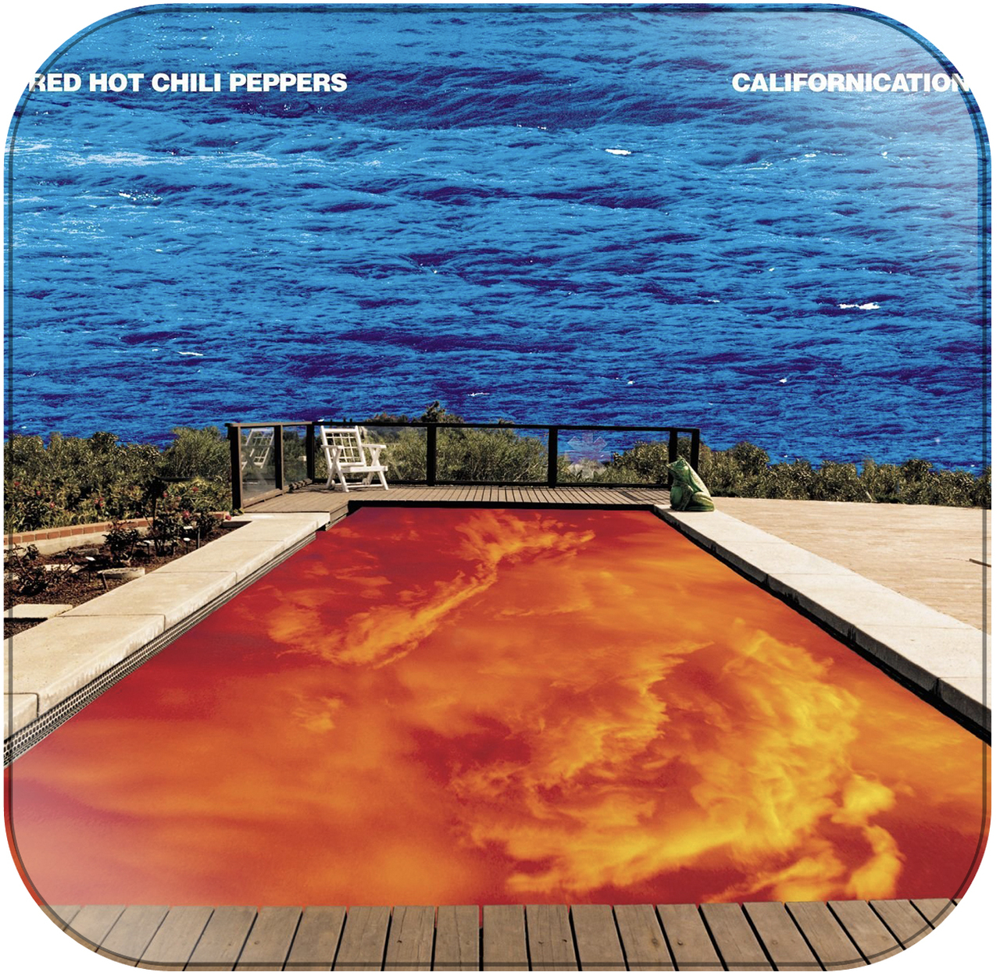

 UCalifornication is also an incredible album, but to be honest I'm getting sick of typing these so this will probably my last comment blurb. Probably just gonna copy/paste this into the rest of the pages. Kiedis was just hitting his stride wrt. IV drug use, but wasn't quite destructive enough yet to affect the band too much. This was their last year before Hillel overdosed, so we still get to hear his crazy funk guitar riffs, which no one was ever really able to replicate. (Frusciante is incredible in his own right and took them in the direction that made htem commercially viable, but you can't beat Hillel for straight punk/funk. But I digress.) Anyway, this album rocks just as much as Freaky Styley. Shoutout Jack Irons, way to quit the band. Pussy.